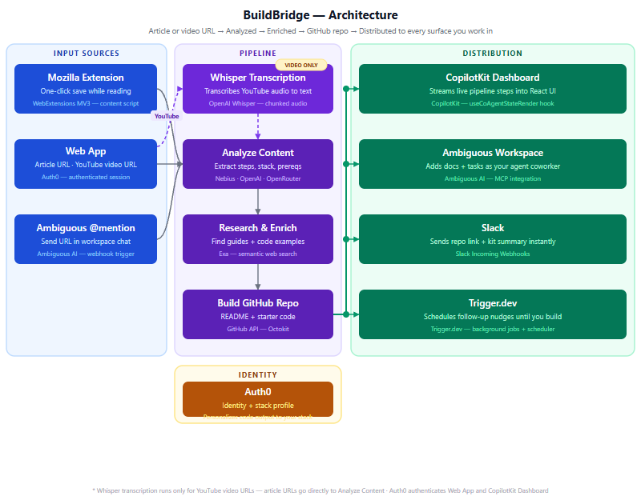
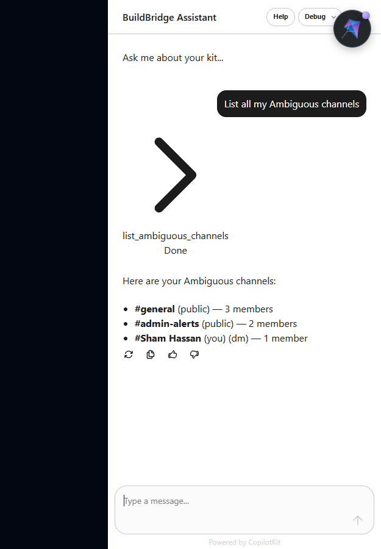

The Problem
You bookmark 10 tutorials a week. You build maybe one a year. Not because you're lazy — because the gap between reading a great article and creating a repo, setting up the structure, and typing the first command is just large enough to kill momentum every single time.
The article is right there. The steps are all listed. But getting from "that looks useful" to "I have a working folder open" takes 15–20 minutes of copy-paste, file creation, and hunting for that one dependency version. By then you've lost the energy that made you want to do it.
"The problem isn't finding good tutorials. It's that the gap between reading one and building from it is just large enough to kill the momentum every time."
— The insight that kicked this offBuildBridge closes that gap. Paste the URL. In under 30 seconds, you have a GitHub repo with the full implementation kit — every step, every command, every prerequisite — ready to clone and start. The article stays open. The momentum doesn't die.
What It Does
Article → Kit
Paste any technical article URL. LLM extracts title, stack, prerequisites, and every numbered step with commands.
Video → Kit
Paste a YouTube URL. Whisper transcribes the audio first, then the same pipeline runs. Source type doesn't matter.
Human-in-the-loop
You see and edit every extracted step before anything gets created. The LLM suggests; you approve.
GitHub Repo
One click creates a named repo with a README, all steps, and starter structure. You just need to clone it.
Workspace Notify
Ambiguous gets a channel message, a task, and a searchable document — all simultaneously.
Follow-up Nudge
Trigger.dev schedules a reminder 2 days later. If you haven't started, it nags you before the repo collects dust.
Three ways to trigger it
How It Works
"List my channels", "Create a task with high priority", or "Search messages about FastAPI". It calls the live API and returns real data.
Architecture

Three things can trigger the pipeline: the web app, the Firefox extension, or an Ambiguous @mention (via a Next.js webhook route). YouTube URLs take a detour through Whisper transcription before hitting the main pipeline. Everything else goes straight to Analyze Content.
The distribution layer fires all six outputs simultaneously — not sequentially. GitHub repo creation, Slack notification, and the three Ambiguous actions (channel message, task, document) all go out in parallel using Promise.all. Trigger.dev schedules the follow-up separately via its background job API.
Key files
| File | Role |
|---|---|
| src/lib/pipeline.ts | Core pipeline — Exa fetch, LLM call, GitHub repo creation, all output actions |
| src/app/api/process/route.ts | SSE streaming endpoint — streams pipeline steps to the UI in real time |
| src/components/BuildBridgeApp.tsx | Main UI — URL input, kit display, step editor, CopilotKit sidebar integration |
| src/app/api/copilotkit/route.ts | CopilotKit server endpoint — OpenAI-compatible adapter (Nebius / OpenRouter) |
| src/app/api/ambiguous/route.ts | Proxy to Ambiguous API — keeps the key server-side, handles GET and POST |
| src/app/api/webhook/ambiguous/route.ts | @mention webhook — receives channel triggers, runs pipeline for cached URLs |
| src/data/cached-kits.json | Pre-analyzed kits for demo URLs — instant 0.5s response, no API calls |
The CopilotKit Fix
The AI sidebar was supposed to be the easiest part. CopilotKit provides a prebuilt sidebar component — you register tools with useCopilotAction, the LLM calls them, and you're done. Except in v1.71.1, that's not how it works anymore. And nothing in the docs tells you that.
"Tool result is missing for tool call call_Wd0IYniA6n94YOlXqasmbfwS". The LLM was calling the tool three times before giving up silently.
The root cause: CopilotKit v1.71.1 uses the ag-ui v2 protocol internally, which tracks tool calls by ID and expects a TOOL_RESULT event to be emitted back into the stream. The old useCopilotAction hook runs the handler but never emits that event. So the runtime keeps waiting. The LLM retries. No response ever arrives.
// ❌ Old (v1) — handler runs but result never reaches ag-ui stream useCopilotAction({ name: "list_ambiguous_channels", parameters: [{ name: "channelId", type: "string" }], // array format handler: async () => { ... } }); // ✅ New (v2) — result emitted through ag-ui TOOL_RESULT event import { useFrontendTool, useDefaultRenderTool } from "@copilotkit/react-core/v2"; import { z } from "zod"; useDefaultRenderTool(); // required — handles rendering for all tools useFrontendTool({ name: "list_ambiguous_channels", parameters: z.object({ channelId: z.string() }), // Zod schema required handler: async ({ channelId }) => { ... } }, []);
Three things change: the import path (@copilotkit/react-core/v2 not the main package), the parameters format (Zod schema instead of a plain array), and the addition of useDefaultRenderTool() once in the component. After that, the sidebar works — tool calls, results, text responses, all of it.

useCopilotAction is silently broken with the ag-ui v2 protocol. Migrate all your tools to useFrontendTool from @copilotkit/react-core/v2 and add useDefaultRenderTool(). Zod is a required peer dep.
Build Story
The hackathon was announced with a 24-hour window. The theme: Agents, Everywhere — Bots, Channels & More. Sponsors: Ambiguous, Nebius AI, CopilotKit, Exa, Trigger.dev. The challenge was to build something that lived inside a workspace environment, not just notified it.
The core pipeline — URL to GitHub repo — came together in the first few hours. Exa's API is straightforward; the LLM prompt required three iterations to get reliable step extraction. GitHub repo creation via Octokit was four lines. Slack took ten minutes. Ambiguous was where things got interesting.
The Ambiguous integration had three parallel goals: post a channel message, create a task, create a searchable document. All three fire simultaneously on every "Build Kit" click. That part worked cleanly. What didn't work was the @mention webhook — Ambiguous's cloud servers can't POST to localhost, which requires either ngrok or the Ambiguous CLI dev tunnel. The webhook code is complete but the demo runs via the web UI and direct API calls instead.
The CopilotKit sidebar was the last thing built and the last thing fixed. The "Tool result is missing" error appeared 2 hours before the deadline. The fix — migrating from useCopilotAction to useFrontendTool — took 45 minutes to identify and 10 minutes to apply once the cause was clear.
The demo video was assembled with ffmpeg and Puppeteer in 20 minutes. No audio — a walkthrough script was written instead. The submission went in with 15 minutes to spare.
Key Learnings
Live LLM calls take 8–30 seconds depending on quota and model. A cached-kits.json file with pre-analyzed versions of your demo URLs makes the difference between a compelling demo and a waiting screen. The cache shows "Analyzed in 0.5s" and the pipeline log says "instant cache hit". Judges see speed; they don't need to watch 15 seconds of loading.
useCopilotAction silently fails with the ag-ui v2 protocol. The handler runs. The result disappears. The sidebar shows nothing. There is no error in the console until you know to look for "Tool result is missing." The fix is in the source types but not in any guide, example, or changelog. Budget time to read the TypeScript declaration files.
When you let users describe what they want to build from the article — not what the article is about — the output becomes genuinely personalised. Same FastAPI URL, different idea field → two completely different kits with different auth, different structure, different commands. That single input changes the product from "article summariser" to "implementation partner."
Adding video support required one extra pipeline step: Whisper transcription before the LLM call. The rest of the pipeline doesn't change — it just receives text. A 3-hour course transcribes to ~18 implementation steps that the LLM extracts cleanly. The pipeline genuinely doesn't care whether the text came from an article or a video.
The webhook code is complete, but Ambiguous's cloud servers can't POST to localhost:3000. You need ngrok, the Ambiguous CLI dev tunnel, or a deployed URL. In a hackathon context, this is easy to miss until the last hour. The web UI demo covers the same pipeline, but the @mention flow is the strongest criterion-2 argument and it never got shown live.
If a repo with the same slug already exists, GitHub returns a 422 with "already exists" in the message — not a meaningful error code. The fix: catch the 422, append a 4-digit timestamp suffix, retry once. This took 5 minutes to write and saved the demo from failing silently on the second run.
Server-side tool registration in CopilotKit v1.71+ will swallow the entire LLM text response if no client renderer is registered. Moving all tools to useFrontendTool on the client — including UI tools like markStepDone — makes everything work: tool calls, text responses, and the rendered sidebar. There is no middle ground in the current version.
Moments In Between
Three retries, no output
Watching the CopilotKit sidebar call the same tool three times and return nothing — not an error, just silence — was deeply confusing. The protocol was eating the results. It took reading the TypeScript source of @copilotkit/react-core/v2 to understand why.
"Instant cache hit" in the log
When the pipeline panel showed "Loading pre-analyzed kit (instant cache hit)..." and the whole kit appeared in 0.5s — that exact label made the demo feel real. The app looked fast because it was fast. That one string changed the feel completely.
18 steps from a 3-hour course
Running the OpenClaw course through Whisper overnight and waking up to 18 clean implementation steps covering everything from install to building a community manager — it worked better than expected. The pipeline was designed for articles. The video didn't care.
The Zoom that didn't happen
Tried to set up a call with the Ambiguous team during the hackathon to figure out the @mention webhook flow. The internet had other ideas. The integration got built anyway — just tested differently. They'll see the working version eventually.
5 minutes to make a video
With 5 minutes before submission, the demo video was assembled with ffmpeg — audio from one recording, video from another, merged blind. No sync check. It didn't perfectly sync. But it showed the app working, and that was what mattered.
Platform Review
Ambiguous
Liked
Gotcha
{ data: [...], total, has_more } not a raw array. Docs show a raw array. Cost 30 minutes.CopilotKit
Liked
useCopilotReadable lets the LLM know about the current kit state. The AI can reference what's loaded without you wiring it explicitly.Gotcha
useCopilotAction works in v1, fails silently in v1.71+ with ag-ui. No error, no warning, no doc note.useFrontendTool requires a StandardSchemaV1 (Zod schema) for parameters. Not documented. Find it in the TypeScript types.Nebius AI (LLM) + OpenRouter (fallback)
Liked
Gotcha
Exa
Liked
contents option, handles most article formats. The one integration that just worked from the first test.Team
Attempted to recruit on UX and backend before the hackathon. Didn't come together in time. The full stack — frontend, pipeline, integrations, demo video, submission — was built solo.